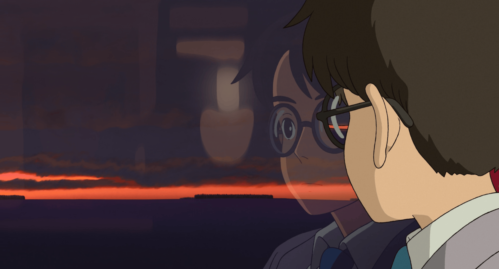
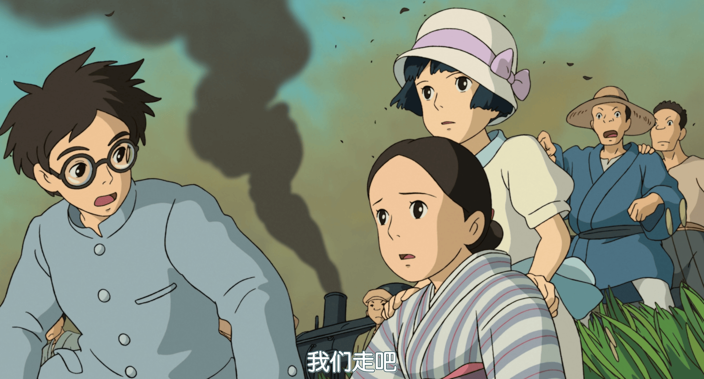
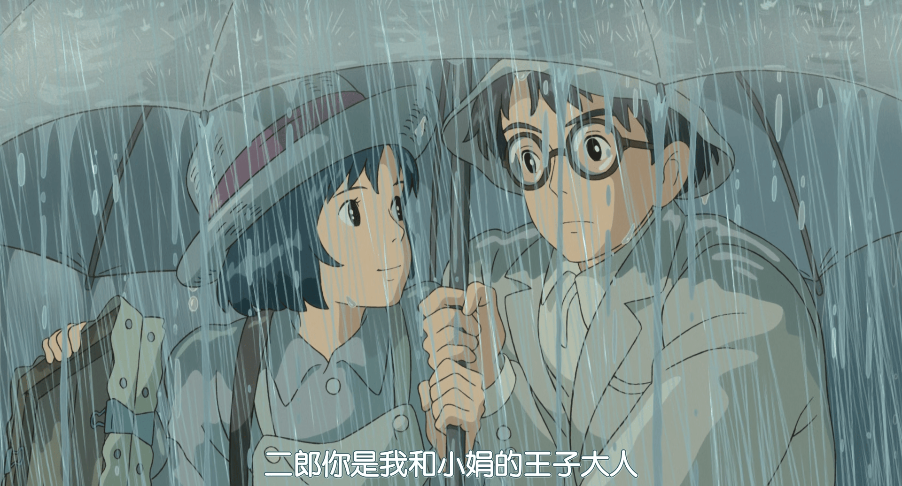

堀越二郎从小梦想设计出自己的飞机，翱翔天际，意大利著名航空公司创办人乔瓦尼·巴蒂斯塔·卡普罗尼是他梦想的启发者。他经历了关东大地震及经济大萧条，乃至东京就读东京帝国大学[22]。毕业后，堀越二郎成了航空工业的菁英，并在轻井泽度假与以前在火车上邂逅的女孩菜穗子重逢。 在神秘的德国旅客-卡斯托普（カストルプ）的协助下，促成二郎与菜穗子的爱情姻缘，其之后因他故逃离日本秘密警察的追捕。 虽身患肺结核，但菜穗子仍一直支持、鼓励二郎；在爱情的力量及努力不懈的精神驱使下，二郎终于实现梦想，研发出优异的九试单座战斗机。尽管菜穗子竭尽所能陪伴支持二郎，也享受着与二郎相处的时光，她的健康状况仍然每况愈下。 后来，二郎开发出九六式舰载战斗机进行试飞，菜穗子自知不久于人世，于是决定独自返回疗养院，留下给二郎、家人和朋友的信件。在试验场，一阵风分散了二郎的注意力，这表明菜穗子已经撒手人寰。1945年夏天，日本在二战中战败后，二郎再次梦见了卡普罗尼，向后者表示对自己的飞机被用于战争感到遗憾。卡普罗尼安慰二郎，称道二郎建造漂亮飞机的梦想还是实现了。此时菜穗子的身影出现，勉励二郎过上充实的生活。二郎和卡普罗尼一起走进他们共同的梦想王国。
《起风了》（日语：風立ちぬ），是日本吉卜力工作室动画导演宫崎骏以在月刊《Model Graphix》上连载漫画《起风了 妄想重返》（風立ちぬ 妄想カムバック）所改编的电影动画。 本作是一部虚构的传记电影，讲述了日本航空工程师堀越二郎（1903-1982）的故事。堀越是一位设计师，他设计了九六式舰载战斗机及其后继机型零式舰上战斗机，这些飞机在第二次世界大战期间由大日本帝国使用。此外，电影改编的同名漫画也融合了两个无关的来源元素：包括堀辰雄于1937年的半自传小说《起风了》。 剧情取材自零式舰上战斗机设计者堀越二郎的生平、以及小说家堀辰雄带有自传色彩之作品《风吹了》和《菜穗子》的内容。电影的故事虚实交错，虽然堀越二郎身为战机工程师一事的确是真人真事，但其与配偶的爱情与婚姻部分则是取材自小说情节的虚构内容。 此片名原名“風立ちぬ”与堀辰雄小说《起风了》的原名相同，而“風立ちぬ”一词则是堀辰雄在该小说里翻自法国诗人保罗·瓦勒里的著作《海滨墓园》（Le cimetière marin）里一句话“Le vent se lève! ... il faut tenter de vivre!”、堀辰雄将其字句译为“起风了、唯有努力试着生存”（風立ちぬ いざ 生きめやも）。